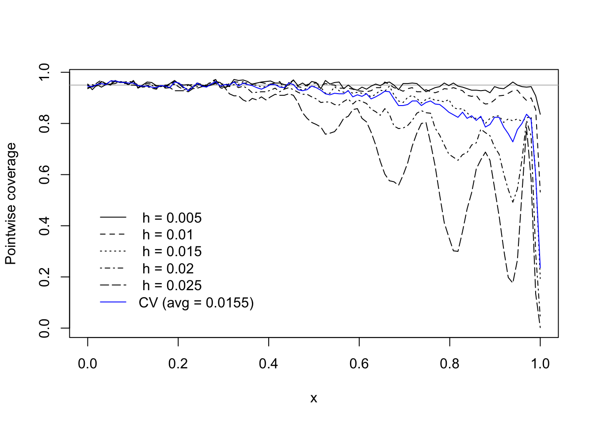
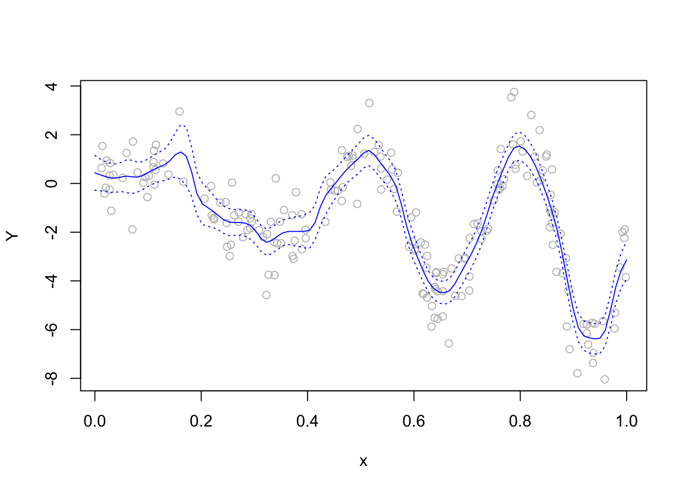

14Pointwise confidence intervals in nonparameteric regression
$$
$$
Given a nonparametric estimator of the form \[
\hat m_n(x) = \sum_{i=1}^n W_{ni}(x) Y_i,
\tag{14.1}\] for some \(x \in [0,1]\), where the weights \(W_{ni}(x)\), \(i=1,\dots,n\), are defined by some nonparametric regression estimator, e.g. the Nadaraya-Watson or local polynomial estimator, we consider how to construct a confidence interval for the value of \(m(x)\). Note that we consider here the value of \(m\) at a single value \(x\) of the covariate, so the confidence intervals developed in this section will be “pointwise” confidence intervals; in Chapter 40 we consider the construction of a confidence band for the entire function \(m\), that is for the set of values \(\{m(x), x \in [0,1]\}\).
To construct a confidence interval for \(m(x)\), we consider under what conditions the pivotal (or intended-as-pivotal) quantity \[
\frac{\hat m_n(x) - m(x)}{\sqrt{\mathbb{V}\hat m_n(x)}},
\tag{14.2}\] will converge in distribution to a \(\mathcal{N}(0,1)\) random variable; then, when these conditions hold, asymptotically valid pointwise confidence intervals can be constructed. We proceed by writing \[
\frac{\hat m_n(x) - m(x)}{\sqrt{\mathbb{V}\hat m_n(x)}} = \frac{\hat m_n(x) - \mathbb{E}\hat m_n(x)}{\sqrt{\mathbb{V}\hat m_n(x)}} + \frac{\mathbb{E}\hat m_n(x) - m(x)}{\sqrt{\mathbb{V}\hat m_n(x)}},
\tag{14.3}\] and checking under what conditions the (i) first term on the right side will converge in distribution to a \(\mathcal{N}(0,1)\) random variable and (ii) the second term, which we will call the bias term, will converge to zero.
Given an estimator of the form in Equation 14.1, we find that we may re-write the first term of Equation 14.3 as \[
\frac{\hat m_n(x) - \mathbb{E}\hat m_n(x)}{\sqrt{\mathbb{V}\hat m_n(x)}} = \frac{\sum_{i=1}^n W_{ni}(x)(\varepsilon_i / \sigma)}{\sqrt{\sum_{i=1}^n W_{ni}^2(x)}}.
\] Now, the result given in Corollary 45.1, which is a corollary to the Lindeberg central limit theorem (Theorem 45.2), implies that this converges to a \(\mathcal{N}(0,1)\) random variable provided \[
\frac{\max_{1\leq i \leq n} |W_{ni}(x)|}{\sqrt{\sum_{i=1}^n W_{ni}^2(x)}} \to 0
\tag{14.4}\] as \(n \to \infty\).
The second term in Equation 14.3 is equal to the bias divided by the standard error of the estimator \(\hat m_n(x)\). In order for this term to vanish, one must take care to choose a smoothness (whether this be governed by the choice of bandwidth or of some other tuning parameter) such that the bias of \(\hat m_n(x)\) is of smaller order than the standard error of \(\hat m_n(x)\) as \(n \to \infty\).
So, to achieve asymptotic normality of the pivotal quantity in Equation 14.2, it is sufficient to ensure that ones weights \(W_{ni}(x)\), \(i=1,\dots,n\) satisfy Equation 14.4 and that the bias is of smaller order than the standard error of \(\hat m_n(x)\) as \(n \to \infty\). The next result offers more explicit conditions under which Equation 14.2 is asymptotically normal when \(\hat m_n(x)\) is the Nadaraya-Watson estimator.
Proposition 14.1 (Asymptotic behavior of the Nadaraya-Watson estimator) Let \(h_n\) be a sequence of bandwidths such that \(nh_n \to \infty\) and \(h_n \to 0\) as \(n \to \infty\) and such that, given \(n_0>0\), the conditions of Proposition 9.1 and Proposition 9.2 hold with \(h = h_n\) for all \(n > n_0\) as well as \((nh_n)^{-1}\sum_{i=1}^nK^2((x_i - x)/h) \geq f_{2,\min} > 0\) and \(\hat f_{n,h_n} \leq f_\max < \infty\). Then
To prove 1., we must show that the Nadaraya-Watson weights \[
W_{ni}(x) = \frac{K((x_i - x)/h)}{\sum_{j=1}^nK((x_j - x)/h)}
\] satisfy the condition in Equation 14.4. For all \(n > n_0\) we have \[
\begin{align*}
\frac{\max_{1\leq i \leq n} |W_{ni}(x)|}{\sqrt{\sum_{i=1}^n W_{ni}^2(x)}} &= \frac{\max_{1 \leq i \leq n}K((x_i - x)/h)}{\sqrt{\sum_{j=1}^n K^2((x_j - x)/h)}}\\
&= \frac{1}{\sqrt{nh_n}}\frac{\max_{1 \leq i \leq n}K((x_i - x)/h)}{\sqrt{(nh_n)^{-1}\sum_{j=1}^nK^2((x_j - x)/h)}} \\
& \leq \frac{1}{\sqrt{nh_n}}\frac{K_\max}{f_{2,\min}}\\
& \to 0
\end{align*}
\] as \(n \to \infty\), which proves 1.
To prove 2. write \[
\begin{align}
\frac{1}{\sqrt{\mathbb{V}\hat m_{n,h_n}^\operatorname{NW}(x)}} &= \frac{1}{\sigma \sqrt{\sum_{i=1}^nW_{ni}^2(x)}} \\
&= \frac{\sum_{i=1}^n K((x_i - x)/h)}{\sigma \sqrt{\sum_{i=1}^nK^2((x_i - x)/h)}} \\
&=\sqrt{nh_n} \frac{(nh_n)^{-1}\sum_{i=1}^n K((x_i - x)/h)}{\sigma \sqrt{(nh_n)^{-1}\sum_{i=1}^nK^2((x_i - x)/h)}} \\
& \leq \sqrt{n h_n} \frac{f_\max}{\sigma f_{2,\min}},
\end{align}
\] which holds for all \(n > n_0\). Together with Proposition 9.2, which gives an upper bound on the absolute value of the bias, the above allows us to write, for all \(n > n_0\), the inequality \[
\frac{|\mathbb{E}\hat m_{n,h_n}^\operatorname{NW}(x) - m(x)|}{\sqrt{\mathbb{V}\hat m_{n,h_n}^\operatorname{NW}(x)}} \leq n^{1/2}h_n^{3/2}\frac{Lf_\max}{\sigma f_{2,\min}}.
\] This completes the proof.
Note that if one chooses \(h_n=c^*n^{-1/3}\) for some constanct \(c^*\), which was prescribed in Proposition 9.3 as the \(\operatorname{MSE}\)-optimal bandwidth for the Nadaraya-Watson estimator when the unknown regression function belongs to a Lipschitz class of functions, the bias term in the decomposition in Equation 14.3 will not vanish as \(n \to \infty\). Recall that the \(\operatorname{MSE}\)-optimal bandwidth negotiates the bias-variance trade-off by setting the order of the squared bias equal to that of the variance. Under this choice of bandwidth, ratio of the bias to the standard error of the estimator does not vanish as \(n \to \infty\). In order to ensure that the bias is of smaller order than the standard error, one must “undersmooth” the estimator \(\hat m\); that is, one must choose a bandwidth which is smaller than the \(\operatorname{MSE}\)-optimal bandwidth, which will result in a more “wiggly” but less biased estimator. The next result essentially restates the previous one, but under a restriction on the choice of the bandwidth such that the bias term in Equation 14.3 will vanish.
Proposition 14.2 (Nadaraya-Watson pivotal quantity) Under the conditions of Proposition 14.1, but with a sequence of bandwidths \(h_n\) such that \(nh_n \to \infty\) and \(n^{1/3}h_n \to 0\), we have \[
\frac{\hat m_{n,h_n}^\operatorname{NW}(x) - m(x)}{\sqrt{\mathbb{V}\hat m_{n,h_n}^\operatorname{NW}(x)}} \stackrel{d}{\rightarrow}\mathcal{N}(0,1)
\] as \(n \to \infty\).
From here, provided that the conditions of Proposition 14.2 and Proposition 13.1 (for estimating \(\sigma^2\)) hold, we have that for any \(\alpha \in (0,1)\) the interval with endpoints \[
\hat m_{n,h_n}^\operatorname{NW}(x) \pm z_{\alpha/2} \hat \sigma_n \sqrt{\sum_{i=1}^nW_{ni}^2(x)},
\tag{14.5}\] where \(z_{\alpha/2}\) is the upper \(\alpha/2\) quantile of the \(\mathcal{N}(0,1)\) distribution, \(\hat \sigma_n^2\) is the differencing estimator from Definition 13.1, and the weights \(W_{ni}(x)\) are as defined in Equation 9.1, will contain \(m(x)\) with probability tending to \(1-\alpha\) as \(n \to \infty\). Note that Slutzky’s Theorem has allowed substitution of \(\sigma\) by the consistent estimator \(\hat \sigma_n\).
Since \(\mathbb{V}\hat m_{n,h_n}^\operatorname{NW}(x) = \sigma^2 \sum_{i=1}^n W_{ni}^2(x)\), Proposition 14.1 gives \[
\mathbb{P}\Bigg(-z_{\alpha/2} \leq \frac{\hat m_{n,h_n}^\operatorname{NW}(x) - m(x)}{\sigma \sqrt{\sum_{i=1}^n W_{ni}^2(x)}}\leq z_{\alpha/2}\Bigg) \to 1-\alpha
\] as \(n \to \infty\). By Slutzky’s Theorem together with Proposition 13.1, the above also holds with \(\sigma\) replaced by \(\hat \sigma_n\). Rearranging the probability statement produces the interval in Equation 14.5.
Nominal (that is “as-advertised”) performance of the interval in Equation 14.5 depends on a selection of the bandwidth which leads to an “undersmooth” estimator of \(m\). How exactly to undersmooth in practice is a tricky problem to solve, and it may be that most practitioners do not make any attempt to undersmooth, but simply use whatever bandwidth is chosen by crossvalidation.
See Figure 14.1 and Figure 14.2 for a simulation study of how the choice of bandwidth affects the coverage performance of the confidence interval in Equation 14.5. These figures make a powerful argument for selecting a bandwidth locally, that is, one may set for each \(x\) a bandwidth \(h_n(x)\) which depends on \(x\).
Code
# true function mm <-function(x) 5*x*sin(2*pi*(1+ x)^2) - (5/2)*x# choose h for NW estimator via crossvalidationmNWcv <-function(data,K,nh =100){# choose a sequence of candidate bandwidths dx <-diff(sort(data$X)) hmin <-min(dx) hmax <-2*max(dx) hh <-seq(hmin,hmax,length=nh)# compute CV criterion for each bandwidth CV <-numeric(nh)for(j in1:nh){ WW <-K( outer(data$X,data$X,FUN="-")/hh[j]) WW <- (1/apply(WW,1,sum)) * WW mX <- WW %*% data$Y WX <-diag(WW) CV[j] <-mean(((data$Y - mX)/(1- WX))^2) }# select bandwidth minimizing the CV criterion hcv <- hh[which.min(CV)] output <-list(CV = CV,hh = hh,hcv = hcv)return(output)}S <-500n <-200alpha <-0.05z_val <-qnorm(1- alpha/2)# choose a sequence of x values at which to evaluate pointwise coveragex <-seq(0,1,length=100)mx <-m(x)# choose several bandwidthshh <-seq(0.005,0.025,by=0.005)# run simulation to obtain monte carlo approximations to the coveragescvx <-array(0,dim=c(S,length(x),length(hh)))cvx_hcv <-matrix(0,S,length(x))hcv <-numeric(S)for(s in1:S){# generate data X <-runif(n) e <-rnorm(n) Y <-m(X) + e data <-list(X = X,Y = Y)# compute estimate of sigma sgh <-sqrt(mean(diff(Y[order(X)])^2)/2)# at several fixed bandwidthsfor(j in1:length(hh)){ WWx <-dnorm(outer(x,data$X,FUN="-")/hh[j]) WWx <- (1/apply(WWx,1,sum)) * WWx mxh <- WWx %*% data$Y semxh <- sgh *sqrt(apply(WWx^2,1,sum)) lox <- mxh - z_val * semxh upx <- mxh + z_val * semxh cvx[s,,j] <- (lox <= mx) & (upx >= mx) } # at CV choice of bandwidth mNWcv_out <-mNWcv(data,K = dnorm,nh =50) WWx <-dnorm(outer(x,data$X,FUN="-")/mNWcv_out$hcv) WWx <- (1/apply(WWx,1,sum)) * WWx mxh <- WWx %*% data$Y semxh <- sgh *sqrt(apply(WWx^2,1,sum)) lox <- mxh - z_val * semxh upx <- mxh + z_val * semxh cvx_hcv[s,] <- (lox <= mx) & (upx >= mx) hcv[s] <- mNWcv_out$hcv}cvgx <-apply(cvx,c(2,3),mean)cvgx_hcv <-apply(cvx_hcv,2,mean)# plot the coverages of the pointwise confidence intervals plot(NA,ylim =range(cvgx),xlim =range(x),xlab ="x",ylab ="Pointwise coverage")abline(h =1- alpha, col="gray")for(j in1:length(hh)){lines(cvgx[,j] ~ x, lty = j)}lines(cvgx_hcv ~ x, col ="blue")legend(x =0,y =0.5,legend =c(paste(" h = ", hh, sep=""),paste("CV (avg = ", round(mean(hcv),4), ")", sep ="")),lty =c(1:length(hh),1),col =c(rep("black",length(hh)),"blue"),bty ="n")

Figure 14.1: Realized pointwise coverage over a sequence of \(x\) values of confidence interval in Equation 14.5 at several fixed bandwidth choices as well when the bandwidth is selected via crossvalidation. Figure 14.2 shows one simulated instance.
Code
# show one example of the estimator under the bandwidth selected via crossvalidationplot(Y ~ X, col ="gray",xlab ="x")lines(mxh ~ x, col ="blue")lines(lox ~ x, col ="blue", lty =3)lines(upx ~ x, col ="blue", lty =3)

Figure 14.2: One simulated data set with the Nadaraya-Watson estimator under the crossvalidation choice of the bandwidth overlaid.